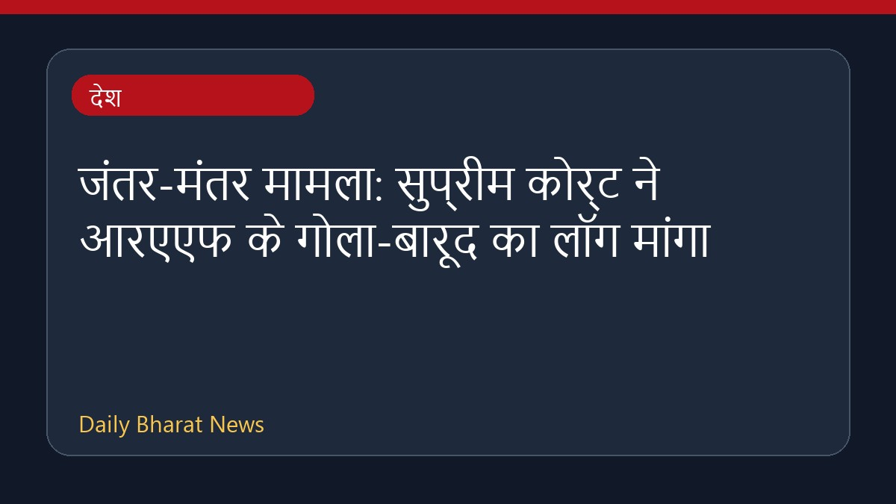

जंतर-मंतर मामला: सुप्रीम कोर्ट ने आरएएफ के गोला-बारूद का लॉग मांगा

सुप्रीम कोर्ट ने जंतर-मंतर पर सीजेपी के नेतृत्व में हुए विरोध प्रदर्शन के दौरान इस्तेमाल किए गए रैपिड एक्शन फोर्स (आरएएफ) के गोला-बारूद का रिकॉर्ड सुरक्षित रखने का निर्देश दिया है। सुनवाई के दौरान अदालत ने कहा कि असाधारण परिस्थितियों में पेलेट गन का इस्तेमाल किया जा सकता है। इसके साथ ही शीर्ष अदालत ने पुलिस से बल प्रयोग से संबंधित स्टैंडिंग ऑर्डर भी मांगा है। वहीं, नागरिक सभाओं के खिलाफ पेलेट गन के इस्तेमाल पर रोक लगाने की याचिका को अदालत ने अस्पष्ट बताया। इस विवाद के बीच सीआरपीएफ प्रमुख ने जवानों को निडर होकर काम करने के लिए कहा है। मामले में उपलब्ध जानकारी सीमित है।